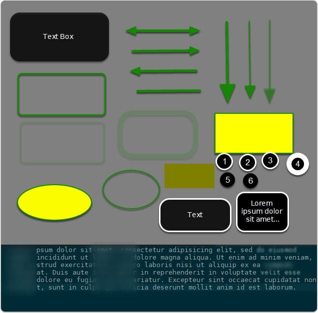
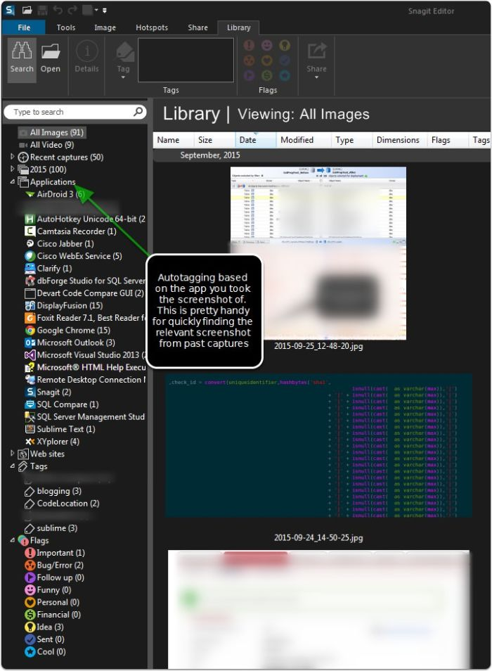

Best Tools for Taking Notes In Development
{{< admonition type="info" title="Updated: 2016-04-08" >}} Been working through some issues with Clarify app on my personal computer, something I messed up. @trevordevore with @clarifyapp has worked step by step through it with me providing some great personal assistance. In addition, he's given me some tips about my research in merging in a php script to automatically upload my images to cloudinary for hosting. I just finished producing some documentation with Clarify 2, and I have to say it's one of the best tools I can think of for producing a stellar documentation without requiring the user to spend time doing much formatting. I think the points in this post still remain, I wish they'd continue to expand it a little more. Maybe an extension that replicates a library of screenshots like Snagit, or something else for quick ad hoc annotation and pasting would be welcome. Overall, these are minor concerns with the great results the app already produces. {{< /admonition >}}
Developers have a lot to juggle.
Do a few of these things sound familiar:
- Juggle current sprint tasks
- Resolve outstanding issues needing immediate attention
- Research/Professional Development
- Long term development objectives that you can only get fragments of time to work on
- Performance testing - and being able to remember numbers/figures with all the moving pieces
- With all the time left blog, write an insightful blog post that will be hailed by millions
I've been on a long quest to evaluate the best tool to help me personally document and stay up to date with some of these tasks. Documenting and task management can be easily overlapped. For the purpose of my notes, I'm going to focus primarily on the documenting aspect. Whether you use Onenote, Trello, word, or any other system, the most important thing is an easy way to recap and evaluate all the work you've done
A few goals for a best fit
- Screenshots are a key for me (see next section if you wonder why)
- Annotation of screenshot images are a must
- Easily able to copy and paste to reuse the material or export in a way that others could consume
- Basic authoring, nothing fancy needed, just basic bold/italics, etc. Something to help visually organize, as raw text can be hard to skim through if a lot of content.
Why do care so much about screenshots?
The problem with solely using text for content is the variety of content we run across.
For instance, when I'm working on performance tuning a database, I will have text based details from SSMS, a grid of results that may be relevant. I may utilize a performance tuning tool like Qure Profiler, or find a diagnostic graph from perfmon that I want to preserve. The variety of formats is daunting to try and capture in a usable format into a documentation tool without considering screenshots. Since the other tools present information in a usable format, but not always exportable format I can use a screenshot to capture the data I reviewed without spending time trying to get things just right.
I also find visually walking through a problem easier to remember when re-reviewing in the future. Your mileage may vary.
Tools I Evaluated
Disclaimer: Please note that most of these tools I received a free license for indicating I'd review. I DO NOT base recommendations on these. A piece of crud is a piece of crud regardless of it it is free. I normally like to review products for an extended period before writing about any of them
My Final Review Rating after intense self examination, contemplation of my navel for hours on end, and the hope of lucrative contracts becoming a professional software reviewer....
Epic: Highly Recommended
Close: Good product
- Greenshot1. Great free screenshot utility. Best general screenshot tool besides Snagit I think I've found.
- OneNote
- Great for OCR scans of text, but basically useless for anything relating to annotations/commenting on an image.
Benched: Not a good fit for me *not reflective of all users
-
1. UI was ok, but found it lacking with keyboard shortcuts and power user usage. The annotations were very dated and seemed very cartoonish for the most part, so I wasn't very happy with the end result. I think the app is a good one, just needs some redesign on a few elements for making it cleaner and modernized. The canvas expansion was very unintuitive as well, making it unfriendly for merging several screenshots together. -
1. organizes by folder/project, which was a cool concept. Overall very limited and nothing that really stood out as a paid product. -
1. Very extensible. One of my favorite features was the _on-screen annotations,_ which let you capture an area on the screen, and do basic annotations on it without any apparent GUI. Nice! Overall I can't recommend due to the learning curve and complexity. It's extremely powerful, but that comes at the cost of being very complex to configure and get working. Documentation was ok, but still for some more advanced setting up of custom share destinations I found it difficult to find help. -
ActivePresenter (free version)
1. Great capturing of screenshots and mouse movements into training video based on detecting movement/actions. This was a great find, however, I can't recommend it for any but those with no work budget, as it's extremely clunky for usage relating to development/notes/personal workflow. It's very busy and hard to find settings to configure, but then again... free!
Epic: Highly Recommended
All 3 of these products are commercial. All three have solid functionality, and I really find them to be beneficial to my development process. They each have a different scope in what they accomplish so I could see myself using each of them in various ways from this point forward.
Clarify 2
This was a gem I discovered and initially passed over. The site documentation focused a lot of documenting steps for tutorials/help, and I went ahead and tried to see what it would be like as it looked polished. So far, my favorite discovery in documenting/notes for development and blogging. This tool has the polish of a well design tool, while still having some powerful extensibility. I think it focuses very well on one thing which is documenting step by step work. This ties directly in with blogging and tech documentation. In a blog, I'm covering specific areas, and organizing my thoughts in blocks.
On the tech side, when I'm evaluating a SQL performance problem or tuning effort, I systematically am going through comparisons of before and after, impact assessment, and identifying the improvements against baseline. This tool allows this workflow perfectly.
The export options are pretty polished. I did a quick walk-through for a issue at work and got several complements about the polished documentation I produced. Best part is this took minimal effort.
Pros
- Absolutely intuitive and clean
- Lack of over complication with unneeded features. Instead, it focuses on usability.
- The annotation style is my favorite, very modern and minimal, not like some that use more cartoonish annotation styles.
- Rounding of images on canvas as a default, looks polished.
- Easy manipulation of canvas, no complication in trying to add multiple images
- Fantastic export options. Polished PDF, copy to clipboard as rich text, _EXPORT TO WORDPRESS _this article was written with this tool entirely* Cons
- Keyboard shortcuts are lacking
- Could really use with an extension of functionality to just capture single screenshots and annotate like snagit. As it stands, the tool is focused more on the documentation aspect, but with some enhancements it would work as a screenshot annotation tool. Sort of like a single step in their documentation tool, without all the rest.

Clarify 2 Image Annotation Editing
This image shows some of the useful annotation powers that clarify offers. The canvas that images are placed on can easily be re-sized with a mouse drag and images pasted.

Snagit
I avoided this product for a while as I honestly thought it was so mainstream that it wouldn't really benefit a power user/developer. So far, I'm glad to say I'm wrong. It's a well designed product that I've come to start using as my primary screen capture utility, along with Clarify
Pros
- Wealth of export functionality
- Good annotation capability with shapes, text, and so on.
- Can capture screen video for a quick tutorial or walkthrough, no extensive editing options on this however. This is the focus of Camtasia.
- Ability to tag screenshots (so bug screenshots could be easily re-reviewed)
Cons
- Keyboard shortcuts are a little lacking with annotations
- Some of the effects/annotations seems a little cheesy to me, but there are plenty of ways to find a good fit that formats in the style I like.
- No rounded corner presets for the image canvas if you want that. There are workarounds, but nothing built in.

Snagit Extensibility with output
A wealth of export functionality is in Snagit, along with the additional plugins you can pull in.

Snagit Profile Extensibility with scripted profiles
Along with keyboard shortcuts and powerful export options, I found you could create capture profiles, letting you with setup a shortcut (keyboard or just menu driven) to capture and save as a special format, basically scripting several steps you'd manually repeat together.

Snagit Annotations
Annotations are pretty comprehensive with some functionality to splice out the middle of images (say a toolbar), merge multiple images, and more. Pretty well designed and along with Clarify 2 the best implementation from any utilities I've experimented with so far.
I did like the ability to "curve" an arrow on the annotations, as it let you smoothly draw an annotation that could curve around content without obfuscating it.

Camtasia
Camtasia crosses over the screenshot territory into more of a screen capture area. This functionality can be very powerful however, as I've found the ability to walk through tech issues with a recording is powerful. I'll probably blog with Camtasia eventually as I get more time to do audio recordings. The primary benefit I've found is the easy gif creation with full annotations, blurring, and other effects that help when providing examples while protecting some sensitive connection/context information.
With Camtasia, I've found it tremendously intuitive, as I've already worked with NLE (Non-linear editors), and the process of putting together a video with it is very simple. Some products I've tried that compare somewhat would be ActivePresenter, which is great for creating tutorials with a lot of "whitespace removed" by detecting the activity via keyboard and clicks.
However, I'd say it still has a hurdle of usability, and is not intuitive compared to the Techsmith offering, making it a great option if you have _zero _budget, but not a good option if you really want to create quickly a quality video.
conclusion
Quality tools can help the development workflow. I personally think a tremendous amount of value comes from utilizing images for varied capturing of work in addition to typed notes, as you can gain a lot of information this way. Hopefully, my suggestions might help spark a few new ideas for great tools to help with your workflow.